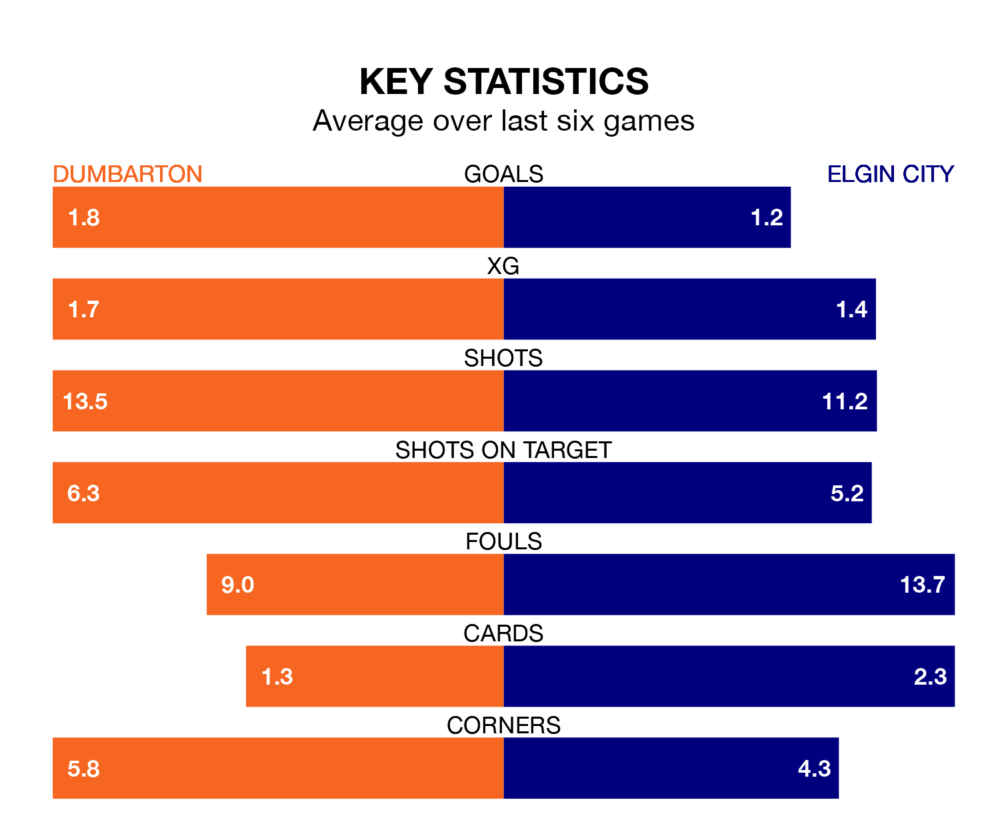

Relegation candidates Elgin City face a challenge away against high-flying Dumbarton at the moreroom.com Stadium on Saturday.
Elgin City are seventh in the League Two table, and have picked up 10 wins and nine draws in their 34 games to date.
The Sons, meanwhile, are third in the standings with 56 points, having won 16 and drawn eight, and are 11 points behind table-toppers Stenhousemuir.
With 33 goals in 34 games so far this season, Elgin are the league's lowest scorers with 1.0 goals per game. And they are conceding more than average, letting in 54 goals at a rate of 1.6 per game.
Dumbarton, meanwhile, are above average scorers, with 1.6 goals per game, compared to a league average of 1.3. They have conceded 1.2 goals per game.
In the last 10 years, Dumbarton and Elgin have played each other on seven occasions. Dumbarton won four of them and Elgin three.
On average, the Sons scored 1.3 goals and the Black & Whites 0.9 in those matches.
Their last meeting was on January 27, when Dumbarton won 1-0 away.
The Sons are in good form in League Two, with four wins and two draws from their last six games.
With a win and four draws over that period, City's form is much worse – they have taken seven points from 18, compared to the home team's 14.
In Tony Wallace, Dumbarton have one of the league's sharpest shooters so far this season. He has notched 11 goals in 34 appearances, to sit fifth in the scoring charts.
His goal rate of one every 204 minutes is much quicker than that of Russell Dingwall, the Black & Whites' top scorer with a goal every 505 minutes, and a total of five goals in 29 games.
Dumbarton's last match was on April 20, a 0-0 draw against Stranraer.
Elgin drew 1-1 with Peterhead last time out, also on April 20, with Ross Draper on the scoresheet.
Updated: 07:59 (UTC), 26/04/24